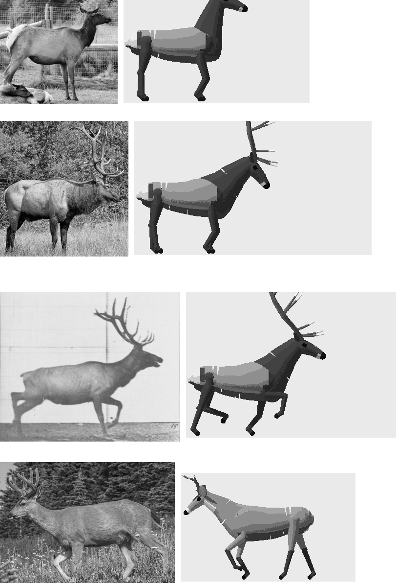
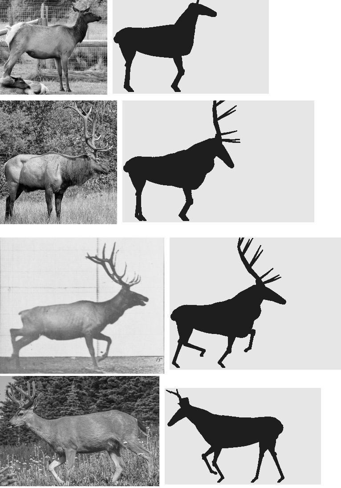
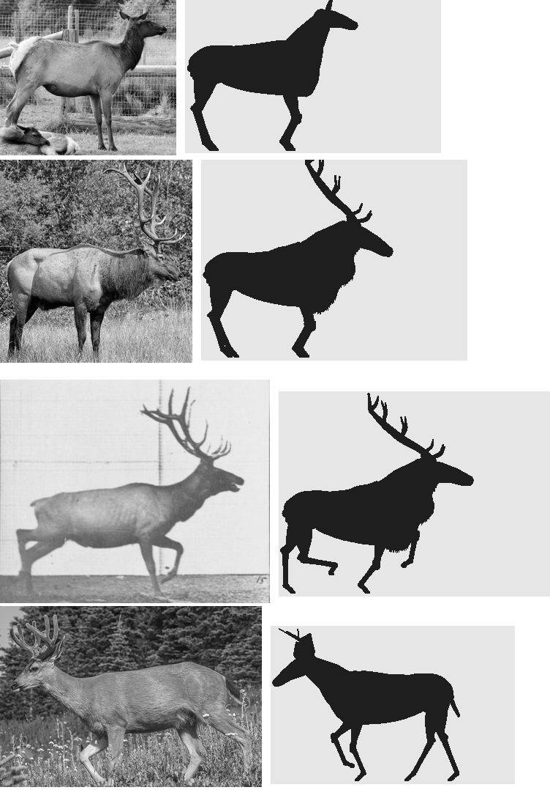
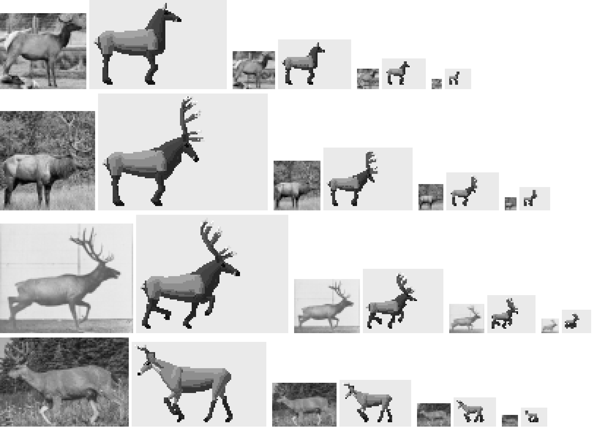
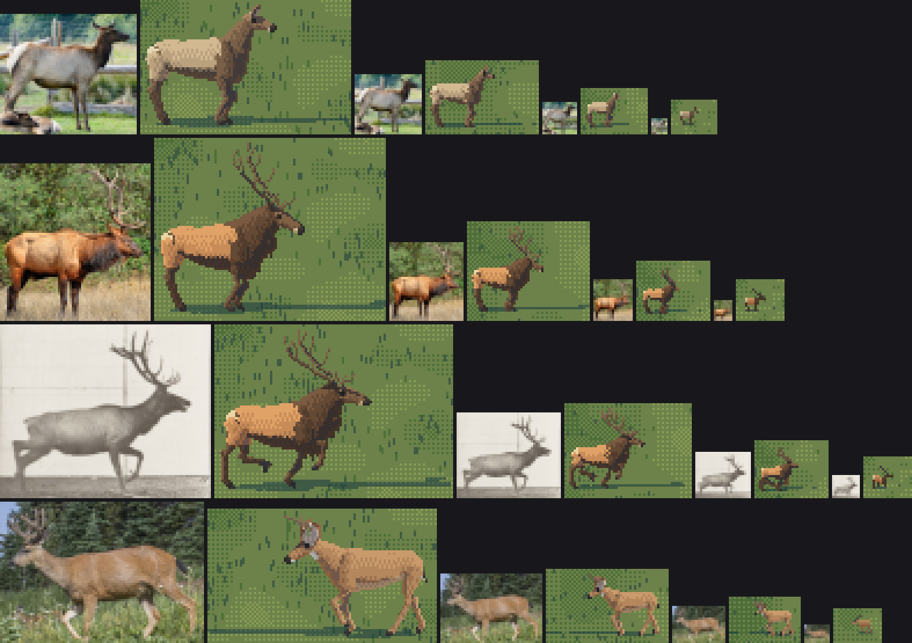
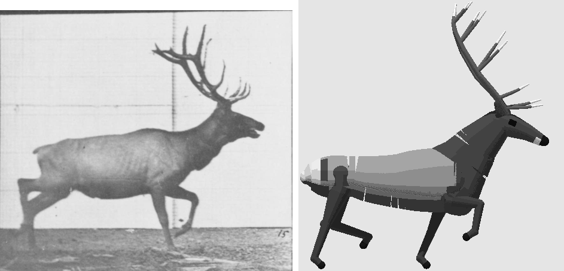

1. The board: photo against render, in silhouette and at size
Back to the tutorial. Code: board.py, sizes.py, sizes_c.py, cmp_photo.py in ~/work/pixelart-studies/elements/deer-elk/src/.
Every correction that made my elk stop reading as a horse came off one instrument. I'd have got there an hour sooner if I'd built it before the first render instead of after, so it's first here.
It has three parts:
- the notan board: photo | render at the same shoulder height, standing on the same ground line, the render as a black silhouette;
- the grey and colour boards: the same layout, once the silhouette is right;
- the size board: the photo area-reduced to 60, 30, 16 and 8 px of body length, beside the render at those sizes.
Choosing the photos
You need side views, or near side views, of real animals standing on visible ground, with the whole animal in frame. From the naturalist's sheets and my own Openverse fetches (python3 ~/work/pixelart-studies/tools/imgfetch.py "roosevelt elk cow" -n 10 -o refs/roosevelt_elk_cow --sheet), I used four:
| photo | why |
|---|---|
| a Roosevelt cow standing alert, her calf bedded at her feet | the cow's neck carriage and body length; a real bedded calf |
| "Majestic Bull", a Roosevelt bull side-on in autumn | the mane, the orange body, antlers from the side |
| Muybridge, Animal Locomotion plate 692, frame 15: an elk trotting | a gait, drawn from life, on a measured ground line |
| a Columbian blacktail buck walking | the deer's proportions and ears |
The searches worth making were specific: "roosevelt elk cow", "elk trotting" and "muybridge elk" (which returned Muybridge's own plates) were gold. Generic ones ("elk bedded down") returned half junk.
Aligning a photo to a render
For each photo, open it and read two numbers off it by eye: the ground row (where the hooves stand) and the withers row (the top of the shoulder). Those set the scale; the ground row sets the placement. That's all the alignment needs, because the render knows its own ground row.
BOARD = [
# file, crop, ground row, withers row, individual, gait, phase, yaw
(REF + 'roosevelt_elk_cow/openverse_Roosevelt_elk_cow_calf_5b89d184.jpg', (220, 110, 730, 560), 545, 228, ('elk', 'f'), 'alert', 0, 0),
(REF + 'roosevelt_elk_cow/openverse_Majestic_Bull_21c2381d.jpg', (110, 20, 690, 630), 612, 282, ('elk', 'm'), 'stand', 0, 0),
(REF + 'elk_trotting/openverse_Elk_trotting_rbm_QP301M8_1887_692a_15_2699e75e.jpg', (0, 20, 918, 780), 745, 372, ('elk', 'm'), 'trot', 0.3, 0),
(NAT + 'blacktail_deer/commons_Columbian_black_tailed_deer_Odocoileus_hemionus__e3d0e22e.jpg', (190, 150, 800, 570), 555, 300, ('deer', 'm'), 'walk', 0.1, 180),
]
HPX = 150 # shoulder height in px on the board
def panel(i, phase=None, gait=None):
f, crop, gr, wr, (spn, sex), g, ph, yaw = BOARD[i]
im = Image.open(f).convert('L').crop(crop)
s = HPX / (gr - wr) # scale so the shoulder is HPX tall
im = im.resize((int(im.width * s), int(im.height * s)))
grow = int((gr - crop[1]) * s) # the photo's ground row, after crop and scale
ind = rig.Individual(spn, sex, 'adult', 'autumn', 1)
R, _, k = paint.paint_index(ind, gait or g, ph if phase is None else phase,
View(yaw=yaw, elev=0, sun_el=50, sun_az=-140, ss=3),
size_px=HPX * 1.62) # my size convention: body length = 1.62 H
gimg = paint.notan(R) if NOTAN else paint.grey(R, bg=0.92)
H = max(im.height, gimg.shape[0] + max(0, grow - R.ground_row)) + 4
out = np.full((H, im.width + gimg.shape[1] + 12), 255, np.uint8)
out[:im.height, :im.width] = np.array(im)
y0 = grow - R.ground_row # put my ground row on the photo's
ys, ye = max(0, y0), min(H, y0 + gimg.shape[0])
out[ys:ye, im.width + 12:im.width + 12 + gimg.shape[1]] = gimg[ys - y0:ye - y0]
return out
Render at camera elevation 0 for the board, so nothing is foreshortened, and match the photo's facing and gait phase as well as you can (Muybridge's frame 15 is phase ≈ 0.3 of my trot).
Read it in notan
A notan is the render as solid black on grey. It removes hide, light and dither, which is where the eye goes first and where the errors aren't. What's left is exactly the naturalist's first three things: body to leg to neck, head against back line, the outline of the patch.

nb019. My first board (in grey, but read it as a silhouette). Every row: the torso is far too long, the neck is a tube stuck on the front of a box, the legs are posts, the bull's antler is a TV aerial.


nb025 and nb029. The notan board forty minutes and a dozen runs apart.

fig. The final rig on the same board.
How to read it, and what I found, in the order the board showed me:
- Measure body length in shoulder heights. Mine was 1.4; the photos are 1.05 (the cow) to 1.3 (Muybridge's bull). This is the horse. Fix it before anything else.
- Look where the neck leaves the body. It must rise from the withers on top and the brisket below, as one wedge. If there's a notch between back and neck, or the neck starts halfway down the chest, it's a llama.
- Look at the back end. The croup slopes to the tail root; the buttock rounds down into the hams, whose rear edge runs to the hock. A square end is a box. (A knob at the top of my rump turned out to be the torso's end cap showing above a ham placed too far forward. I found it by printing, for each of the rearmost columns, which rig parts owned its pixels.)
- Look at the hind leg. It bends: the hock sits well behind the line from stifle to hoof.
- Look at the leg thickness. An elk's cannon is about 0.035 H. In the notan, legs should be the thinnest things there.
- Look at the antlers. A bull elk's beams leave the head going back, sweeping over the shoulders; the tines come off the front of the beam, pointing forward and up.
Then at size
The board at 150 px is for proportion. The size board is the real test, because the animal will be seen at 60 px or less. The photo is shrunk by area-averaging (Image.BOX), which is what a camera would record at that distance, to the same body length as the render:
for L in (60, 30, 16, 8):
s = (L / 1.62) / Hphoto # Hphoto = ground row - withers row
p = im.resize((max(1, int(im.width * s)), max(1, int(im.height * s))), Image.BOX)
R, _, k = paint.paint_index(ind, g, ph, View(yaw=yaw, elev=0, sun_el=50, sun_az=-140, ss=8), size_px=L)
cells.append((np.array(p), paint.grey(R, bg=0.92)))

nb022. The early rig at 60, 30, 16 and 8 px beside its photos. At 16 and 8 px the leg thickness is the loudest thing in each figure: table legs.

fig. The final rig in colour. At 8 px the reduced photo is a pale smudge with a darker front; the render is a pale body, a dark front, a pale rump pixel, a head, legs. Pixel art may be more legible than the photo; it may not be less.
What to look for at each size:
- 60 px: the silhouette as in the notan; the patch (the cape edge and the rump) in the right place.
- 30 and 16 px: the head height against the back line; whether the legs are still the thinnest marks; whether the antlers still sweep back or have become a post.
- 8 px: only the far read: a dark front, a pale back, a head up or down, legs. If the photo's smudge has a dark front and your figure doesn't, you've lost the elk.
The Muybridge frame
For gaits, Muybridge is a board on his own. Plate 692 (a trot) and 695 (a gallop, and the same animal from behind) show where every hoof is in each of 24 frames, on a measured grid.

nb009. Plate 692. My first board was frame 15 of this plate beside my trotting bull (nb014); it caught a sampling bug (white slits in the body) and the long torso in one image.

Where it stops
The board checks proportion and pattern, not weight. In the final board the bull's silhouette matches, but the photo's weight is in the lit shoulder and ham masses with darker ribs between, and a silhouette can't show that. The next instrument I'd build is the same board in value only, photo reduced to 60 px beside my render, each quantised to six steps, compared plane by plane.